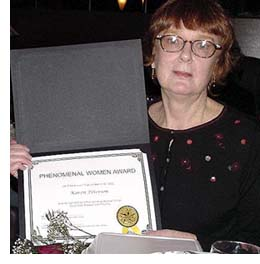

|
2002 Phenomenal Women Awards Karen Peterson Honored
Karen Peterson of Thorne Bay, has been a devoted volunteer to many organizations and groups in Ketchikan and Thorne Bay. She works as a volunteer EMT on Prince of Wales Island and as a volunteer dispatcher for the Thorne Bay ambulance. Her friend, Gai Hooker of Ketchikan, credits Karen as being her best friend and helping Gai to raise her five children after she became a single parent. Gai state, "Not may, if any single friends would help a single mom of five kids out, but Karen was always there for my children and me." Karen was unable to attend
the Phenomenal Women Awards event. Her friend, Gai Hooker, accepted
the award on her behalf.
Photo of Gai Hooker by Gigi Pilcher...
|